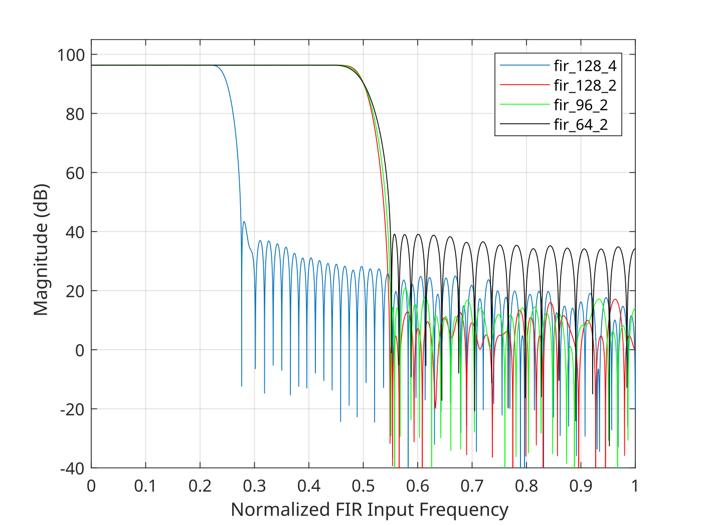

AD9361, AD9364 and AD9363
The AD9361, AD9364, and AD9363 are high performance, highly integrated RF Agile Transceiver™. Their programmability and wideband capability make them ideal for a broad range of transceiver applications. The devices combine an RF front end with a flexible mixed-signal baseband section and integrated frequency synthesizers, simplifying design-in by providing a configurable digital interface to a processor. Both the AD9361 and AD9364 operate in the 70 MHz to 6.0 GHz range, and the AD9363 operates in the 380 MHz to 3.8 GHz range, all covering most licensed and unlicensed bands. Channel bandwidths on the AD9361 and AD9364 are from 200 kHz to 56 MHz, and the AD9363 has 200 kHz to 20 MHz. Both the AD9361 and the AD9363 are a 2 Rx, 2 Tx device, and the AD9364 is a 1 Rx, 1 Tx device.
The AD9361, AD9364 and AD9363 are all packaged in the same 10 mm × 10 mm, 144-ball chip scale package ball grid array (CSP_BGA), with a common footprint making transition from 1 x 1 channels to 2 x 2 channels very easy.
Block Diagram

General Description
The AD9361 and AD9364 are highly integrated radio frequency (RF) transceivers capable of being configured for a wide range of applications. The device integrates all RF, mixed signal, and digital blocks necessary to provide all transceiver functions in a single device. Programmability allows this broadband transceiver to be adapted for use with multiple communication standards, including frequency division duplex (FDD) and time division duplex (TDD) systems. This programmability also allows the device to be interfaced to various baseband processors (BBPs) using a single 12-bit parallel data port, dual 12-bit parallel data ports, or a 12-bit low voltage differential signaling (LVDS) interface. The LVDS interface is used on the AD-FMCOMMS2-EBZ, AD-FMCOMMS3-EBZ, AD-FMCOMMS4-EBZ and AD-FMCOMMS5-EBZ. Configuring the digital interface in CMOS mode is not tested nor supported on these platforms. This is due to the purposefully weak CMOS drivers (to keep the noise off the part as much as possible) that are part of the digital interface and the large capacitance of the FMC connector.
The AD9361 and AD9364 also provide self-calibration and automatic gain control (AGC) systems to maintain a high performance level under varying temperatures and input signal conditions. In addition, the device includes several test modes that allow system designers to insert test tones and create internal loopback modes that can be used by designers to debug their designs during prototyping and optimize their radio configuration for a specific application.
More information can be found in the AD9361 Reference Manual UG 570.
Receive Chain
The receiver section contains all blocks necessary to receive RF signals and convert them to digital data that is usable by a BBP. There are two independently controlled channels that can receive signals from different sources, allowing the device to be used in multiple input, multiple output (MIMO) systems while sharing a common frequency synthesizer.
Each channel has three inputs that can be multiplexed to the signal chain, making the AD9361 suitable for use in diversity systems with multiple antenna inputs. The receiver is a direct conversion system that contains a low noise amplifier (LNA), followed by matched in-phase (I) and quadrature (Q) amplifiers, mixers, and band shaping filters that down convert received signals to baseband for digitization. External LNAs can also be interfaced to the device, allowing designers the flexibility to customize the receiver front end for their specific application.
The AD9361 RX signal path passes downconverted signals (I and Q) to the baseband receiver section. The baseband RX signal path is composed of two programmable analog low-pass filters, a 12-bit ADC, and four stages of digital decimating filters. Each of the four decimating filters can be bypassed. The corner frequency for each low-pass filter is programmable. Note that both the I and Q paths are schematically identical to each other.
Gain control is achieved by following a preprogrammed gain index map that distributes gain among the blocks for optimal performance at each level. This can be achieved by enabling the internal AGC in either fast or slow mode or by using manual gain control, allowing the BBP to make the gain adjustments as needed. Additionally, each channel contains independent RSSI measurement capability, dc offset tracking, and all circuitry necessary for self-calibration.
The receivers include 12-bit, sigma-delta (Σ-Δ) ADCs and adjustable sample rates that produce data streams from the received signals. The digitized signals can be conditioned further by a series of decimation filters and a fully programmable 128-tap FIR filter with additional decimation settings. The sample rate of each digital filter block is adjustable by changing decimation factors to produce the desired output data rate.
IQ Correction
The AD936x includes an IQ correction, based on a static and dynamic RX quadrature calibration which minimizes the phase and gain error in the receive path. RX quadrature continuous tracking will use RX data to minimize the quadrature error continuously. The tracking which minimizes quadrature error assumes a complex quadrature signal, and when receiving real-only signals will need to be turned off, by controlling the Tracking Controls, or may cause the Rx signal to oscillate.
Transmit Chain
The transmitter section consists of two identical and independently controlled channels that provide all digital processing, mixed signal, and RF blocks necessary to implement a direct conversion system while sharing a common frequency synthesizer.
The TX signal path receives 12-bit 2s complement data in I-Q format from the digital interface, and each channel (I and Q) passes this data through a fully programmable 128-tap FIR filter with interpolation options. The FIR output is sent to a series of additional interpolation filters that provide additional filtering and data rate interpolation prior to reaching the 12-bit DAC. The FIR filter, and of the three interpolating filters can individually be controlled and bypassed if desired. Each 12-bit DAC has an adjustable sampling rate.
The DAC’s analog output is passed through two low pass filters (to remove sampling artifacts) prior to the RF mixer. The corner frequency for each low-pass filter is programmable. At this point, the I and Q signals are recombined and modulated on the carrier frequency for transmission to the output stage. The combined signal also passes through analog filters that provide additional band shaping, and then the signal is transmitted to the output amplifier. Each transmit channel provides a wide attenuation adjustment range with fine granularity to help designers optimize signal-to-noise ratio (SNR).
Note that both the I and the Q paths are schematically identical to each other.
Self-calibration circuitry is built into each transmit channel to provide automatic real-time adjustment. The transmitter block also provides a TX monitor block for each channel. This block monitors the transmitter output and routes it back through an unused receiver channel to the BBP for signal monitoring. The TX monitor blocks are available only in TDD mode operation while the receiver is idle.
PLLs
There are three main PLLs in the system, two RF PLLs and one baseband PLL. The two RF PLLs (Rx and Tx) have identical architectures. The PLL frequencies are governed by the following equations:
\(F_{RFPLL} = F_{REF} \times (N_{Integer} + N_{Fractional}/8388593 )\)
\(F_{BB} = F_{REF} \times (N_{Integer} + N_{Fractional}/2088960)\)
where \(N_{Integer}\) and \(N_{Fractional}\) are user configurable and unique to each PLL.
Arbitrary Precision
While both are commonly known as “Fractional” PLLs, they are not “Floating point” PLLs. The smallest step size they have is based on the reference clock \(F_{REF}\). For a \(F_{REF} = 40.000 MHz\), that would mean that the step size, or resolution of:
\(F_{RFPLL}\) would be 4.7683801085593257415158894942215 Hz. (this comes from \(\displaystyle \frac{40000000}{8388593}\)) (or about 0.068 ppm at 70 MHz, and 0.011 ppb at 6.0 GHz)
\(F_{BB}\) would be 19.148284313725490196078431372549 Hz. (this comes from \(\displaystyle \frac{40000000}{2088960}\)). (or about 36.76 ppm at 520833.3 kSPS or 0.311 ppm at 61.44 MSPS)
The implications of this are that if you need to tune an LO exactly to 2.400000002 GHz - you can not use a 40.000 MHz crystal. The practical implications of this are small, as frequency correction algorithms in implementations such as modems will normally take care of these small offsets.
Integer Spurs
Because both PLLs use a fractional technique based on a modulator, the modulators constantly trying to correct for instantaneous phase errors. The heavy digital activity can cause spurious components at the output when there is no averaging needed. (when the fractional part is close to zero, where “close to” is defined as 0 ±100000. That would be within ±1.25% of the integer).
As can be seen by the figure that was created by measuring EVM, and modifying the LO only. Here you can see the -48 dB (0.39 %) nominal (non-integer spur), degrading to -40 dB (1.0 %) when exactly on the integer spur. Moving the slope of the line is quite steep (so moving off the integer spur by nearly any amount is better than nothing), and once you are more than ±1.25% off, you should not see any effects of integer boundary spurs.

Rx and Tx Filtering
In both the receive and transmit chains, there are:
analog low pass filters either to remove sampling artifacts on the Tx side, or to band shape to reduce adjacent-channel interference on the Rx side.
Digital interpolation/decimation filters to up/down convert from the digital baseband rate (64.11 MSPS max) to the actual ADC (640 MSPS) or DAC (320 MSPS) rates.
No matter the implementation (analog or digital) these filters impact the magnitude and phase in the passband. This must be compensated somewhere in the system. It can easily be done (and therefore is normally done) inside the 128 tap FIR filter. The FIR filter is not only used to implement a low pass filter, but also to compensate for the magnitude and phase impacts the analog and digital half band filters create in the baseband area of interest.
These filters depend on sample rates, clocks, and data rates (which sets the digital half band filters), and the RF bandwidth (which sets the analog filters). Loading a filter, and then changing anything in the system, will negatively affect overall baseband performance.
This is why we have created an AD9361/AD9364 Filter tool. It will design a low pass filter, and ensure that any magnitude and phase effects of the analog or digital half bands are compensated for properly inside the FIR coefficients.
The libad9361-iio libraries provide a standard set of filters, which can be used to enable the additional decimation to reach the lower data rates of the transceiver if a user does not want to design a filter on their own. This is provided in the ad9361_set_bb_rate function. These are also available in MATLAB R2019b when custom filters are not designed. These filters are generally wideband, and can provide a reasonably flat response to the overall signal chains. For optimal performance, users should utilize the AD9361/AD9364 Filter tool, and design a filter specific for their waveform.
Below are the responses of the filters provided in the ad9361_set_bb_rate function. All four filters decimate by at least 2, which means their passbands extend close to the entire output bandwidth of the FIR. Since these filters do not account for the responses of the upstream halfbands, ADC, and analog filters, the overall amplitude response of the transceiver can taper as these other filters are set with tighter bandwidths.
{kind=link}

Clock Options
The AD9361 uses fractional-n phase locked loops (PLLs) to generate the transmitter and receiver local oscillator (LO) frequencies as well as the oscillator (the baseband PLL) used for the data converters, digital filters, and I/O port. These PLLs all require a reference clock input, that includes a digitally controlled crystal oscillator (DCXO) function, an on-chip programmable/variable capacitor. This capacitor can tune the crystal frequency variance out of the system, resulting in a more accurate reference clock from which all other frequency signals are generated. The input for the DCXO can be provided by two different sources:
The first option is to connect an external oscillator or clock distribution device (such as the AD9548) to the XTALN pin (with the XTALP pin remaining unconnected). If an external oscillator is used, the frequency can vary between 10 MHz and 80 MHz. This is for applications such as wireless basestations, which require that the reference clock lock to a system master clock.
The second option is to use a dedicated crystal [1] with a frequency between 19 MHz and 50 MHz connected between the XTALP and XTALN pins. This is typically used in wireless user equipment (UE), which do not typically need to be locked to a master clock but they do need to adjust the LO frequency periodically to maintain connection with a basestation (BTS). The BTS occasionally informs the UE of its frequency error relative to the BTS, and the baseband processor can adjust the reference clock frequency and thus the LO frequency as needed.
The DCXO tuning function can also be used with the on-chip temperature sensor to provide oscillator frequency temperature compensation during normal operation.